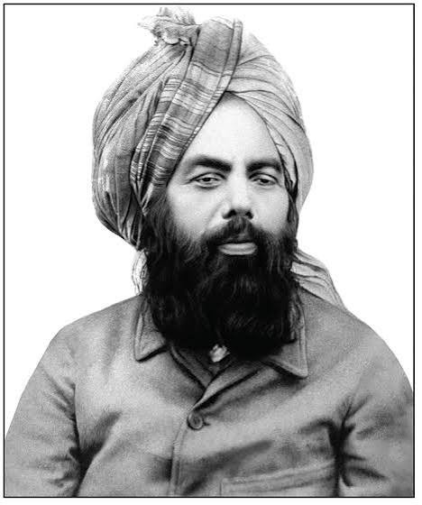

Qadian, Punjab · 1891
Sixty-five numbers, written in five rows, recorded as revelation and left undeciphered for more than a century. This site sets out one proposed reading: that each number is an atomic number, and the sequence describes how stars build the elements.
The sequence as light — 65 numbers, one line each, coloured by where the element is made
I — The Revelation

Most of the revelations recorded by Mirza Ghulam Ahmad arrived as language — Arabic, Urdu, Persian, sometimes English. This one arrived as arithmetic.
Published in Ilham and later reproduced in The Heavenly Decree, the entry consists of sixty-five figures set in five rows, alongside a small hand-drawn symbol whose meaning has never been established. A note recorded with it stated that their import was known to God alone, and would be made plain in its own time.
Attempts at a solution have run through Abjad letter-values, binary, Qur'anic chapter-and-verse indices, geographic coordinates and Fibonacci relations. As of the Review of Religions' 2022 appeal for codebreakers, none had held up.
“Peace be upon the one who fathoms our mysteries and follows the guidance.”
II — Fifteen Distinct Values
Strip the sixty-five figures down to their distinct values and fifteen numbers remain: 1, 2, 5, 7, 10, 11, 14, 15, 16, 23, 26, 27, 28, 34, 47.
Read as atomic numbers, they name fifteen elements. The set is not scattered: it is weighted almost entirely toward the elements that matter in stellar burning, and it reaches from the two gases left over from the Big Bang all the way up to a metal that only forms when two neutron stars collide.
Across all sixty-five positions. Hydrogen leads, silicon follows, nitrogen appears exactly seven times.
III — How Stars Make Matter
Almost every atom heavier than helium was assembled inside a star. The mechanism was set out in 1957 by Margaret Burbidge, Geoffrey Burbidge, William Fowler and Fred Hoyle — the paper known ever since as B²FH.
A massive star burns through a fixed sequence of fuels. Each stage ignites when the last one runs out, each is hotter and shorter than the one before, and each leaves behind heavier ash. The final stage ends in catastrophe.
IV — Reading the Sequence
Translated into symbols, each row of the revelation is read here as a stage in the life and death of a massive star.
V — Four Relations
Four relations from nuclear astrophysics that this reading finds expressed in the numbers.
VI — The Case
Taken singly, none of these observations would be worth much. The argument rests on their appearing together in one short sequence.
The numbers were recorded in 1891. The framework needed to read them this way did not exist: B²FH was published in 1957, sixty-six years later. The confirmation that silver and gold are forged in neutron-star mergers came in 2017, when LIGO and Virgo detected GW170817 and telescopes watched the resulting kilonova — one hundred and twenty-six years after the entry was written.
VII — Open Questions
A proposal worth taking seriously is one that states plainly where it is weakest. Four problems stand out, and a persuasive solution will need to address them.
None of this settles the question either way. It marks out what a stronger version of the argument would have to do — and invites anyone with the relevant training in nuclear astrophysics, statistics or the manuscript history to take it further.
VIII — In Closing
For 130 years the search ran through human languages — Arabic letters, cipher alphabets, scripture indices, number mysticism. This reading proposes that the sequence was never written in a human language at all.
Fifteen values. Fifteen elements. Hydrogen and helium from the first minutes of the universe; boron chipped out of heavier nuclei by cosmic rays; nitrogen turning over endlessly as a catalyst; the whole intermediate ladder of neon, sodium, silicon, phosphorus, sulfur and vanadium; the iron-peak triad where fusion stops and the star dies; and silver — appearing exactly once — which no star can make alone.
Whether that pattern is design or coincidence is not a question physics can answer. What can be said is that the pattern is there, that it is unusually tidy, and that it is now written down where anyone can check it.